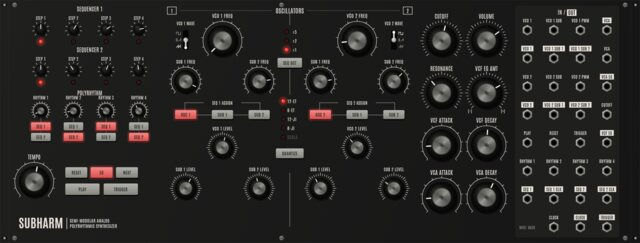
SUBHARM
A polyrhythmic synthesizer: 2 VCOs with 4 subharmonics, 2 four-step sequencers and 4 polyrhythmic clock dividers.
Synthesizers, drum machines, sequencers and effects that you patch together with cables. Play them from the computer keyboard or a MIDI controller, and write songs in the built-in sequencer. Nothing to install.
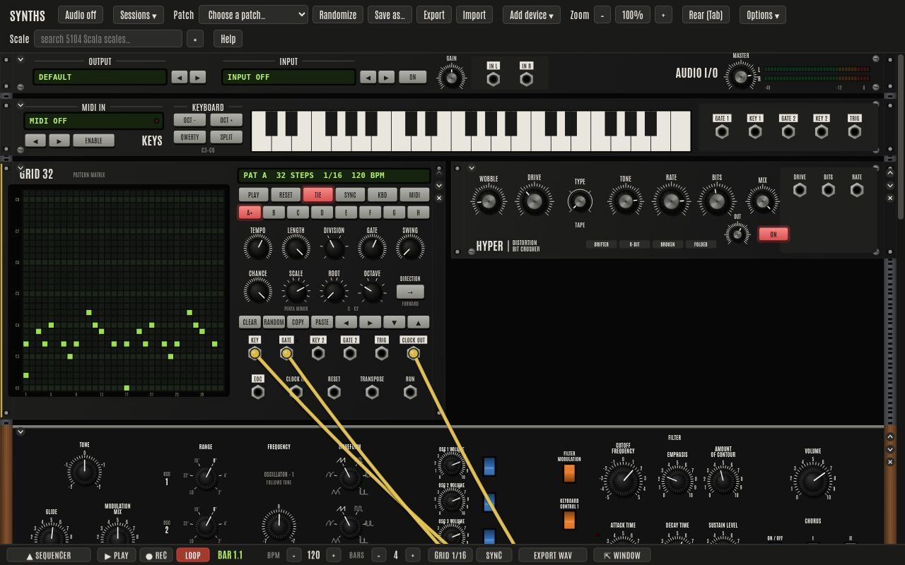
Every device runs sample by sample in one audio engine, so a cable can take audio, control voltages, gates or clocks from any output to any input, as on a modular synth.
Drag cables from any output to any input on the front, and route the audio on the back of the rack (Tab turns it around).
Synths with up to 8 voices, drum machines, a drone machine, a note grid, LFOs, a mixer, a compressor and six effects. Add as many as you like.
Design your own synth: lay out its front and back panels, then wire oscillators, filters, envelopes and sequencers behind the knobs. It plays while you build it.
Tracks on MIDI channels, a piano roll with selection and editing, recording, loops, MIDI file import, and export of the song as a WAV file.
Turn any knob while recording and it is written into a CV track, played back with the song and editable as a curve.
Play from a MIDI controller or the computer keyboard, map controllers to knobs with MIDI learn, and sync to MIDI clock.
Dozens of factory patches, your own patches and sessions saved in the browser, and export or import as files.
Retune the synths to historical, just and microtonal scales from a large archive of tunings.
Move the sequencer into a window of its own, on a second screen, and it comes back when you close it.
Every button can be pressed from the computer keyboard; hold Shift to see which key does what.
Click a picture to see it full size.
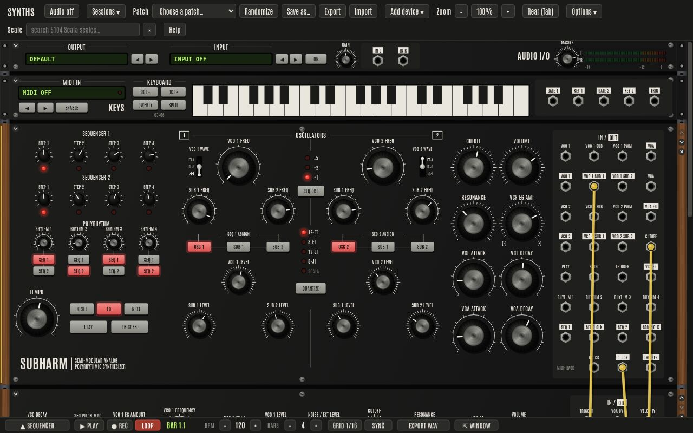
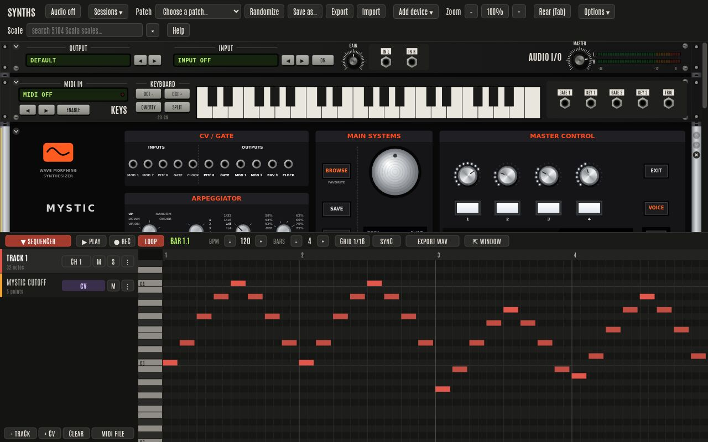
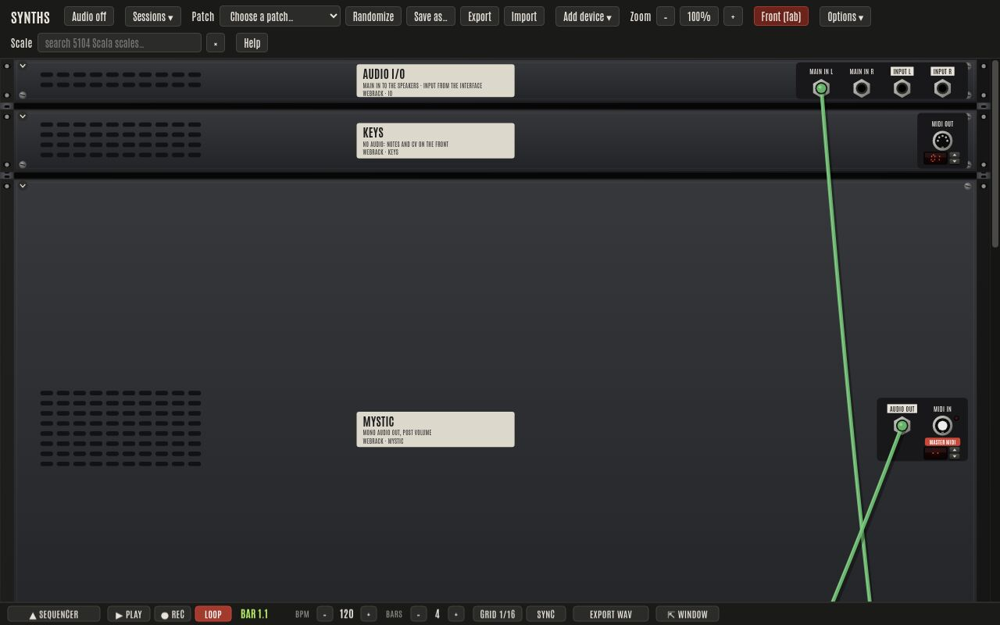
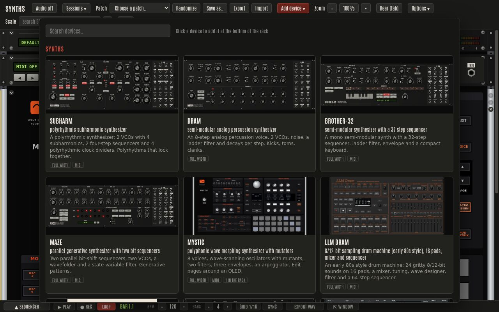
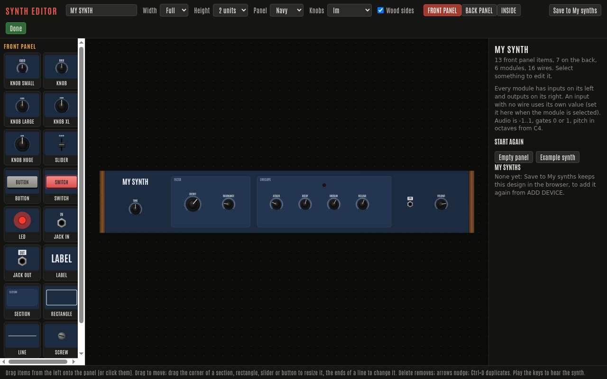
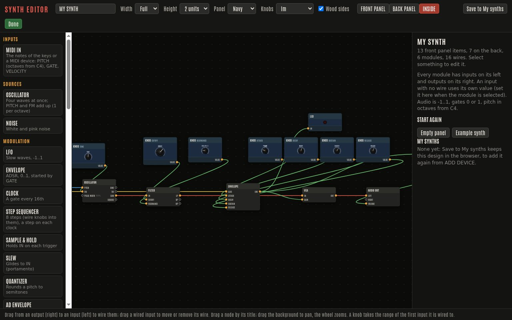
Original instruments inspired by classic designs, each with its own panel, sound engine and patch sockets.

A polyrhythmic synthesizer: 2 VCOs with 4 subharmonics, 2 four-step sequencers and 4 polyrhythmic clock dividers.
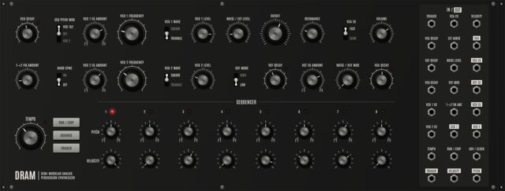
An 8-step analog percussion voice, 2 VCOs, noise, a ladder filter and decays per step. Kicks, toms, clanks.
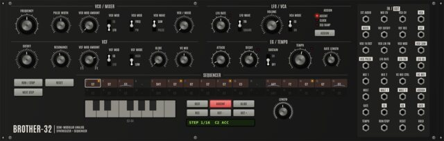
A mono semi-modular synth with a 32-step sequencer, ladder filter, envelope and a compact keyboard.
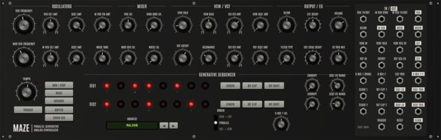
Two parallel bit-shift sequencers, two VCOs, a wavefolder and a state-variable filter. Generative patterns.
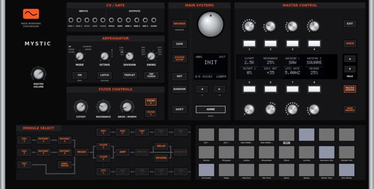
8 voices, wave-scanning oscillators with mutants, two filters, three envelopes, an arpeggiator. Edit pages around an OLED.
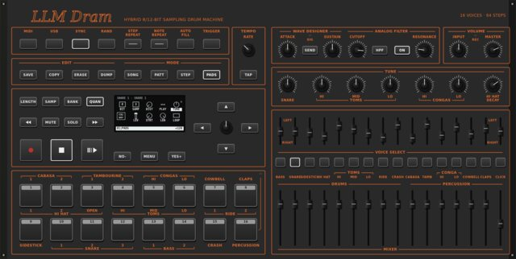
An early 80s style drum machine: 24 gritty 8/12-bit sounds on 16 pads, a mixer, tuning, wave designer, filter and a 64-step sequencer.
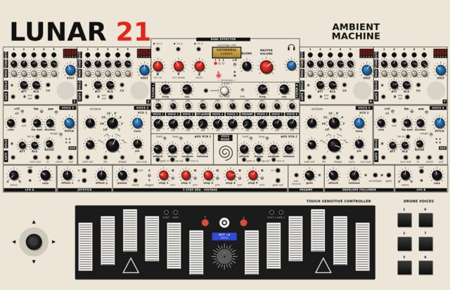
An ambient drone machine: six drone voices, two VCOs on touch plates, aggressive resonant filters and a dual effector with cartridges.
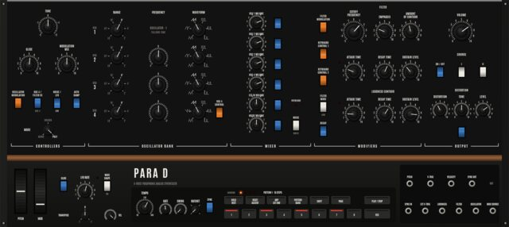
A classic analog monosynth design with four oscillators, played mono, in unison or as four voices through the ladder filter, with a stereo chorus, a distortion, an arpeggiator and a 32-step sequencer.
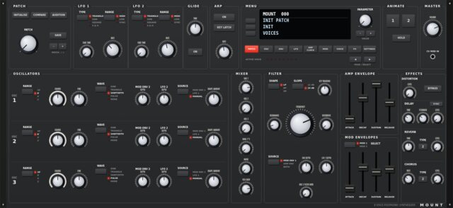
8 voices of 3 oscillators (with wavetables), a multimode filter, three envelopes, two LFOs, a mod matrix with ANIMATE buttons, an arpeggiator, and distortion, chorus, delay and reverb.
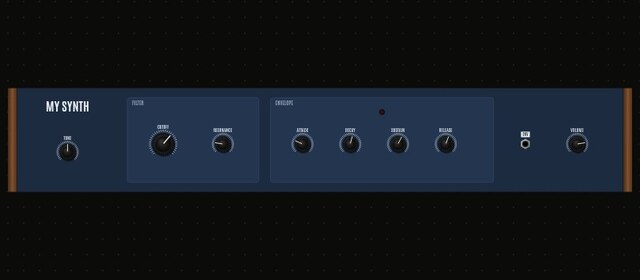
A synth you design in the Synth Editor: full or half width, 1 to 5 units high, one voice. Save a design in the browser and add it again from ADD DEVICE.
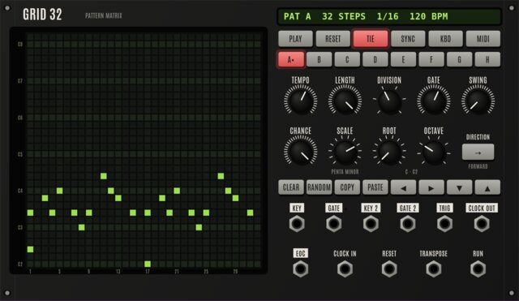
Draw notes on a 32 x 32 LED matrix: columns are steps, rows the notes of a scale. Two KEY / GATE pairs (lowest and highest note), ties, chance, swing, directions, 8 patterns, and MIDI to play the rack's synths.
Half width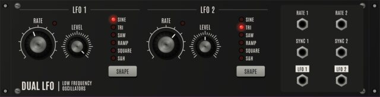
Two LFOs (sine, triangle, saw, ramp, square, S&H) with rate and level, and sync inputs. Half width.
Half width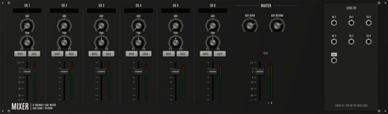
Six mono channels with level, pan, mute / solo and an aux send / return, into the main stereo out.
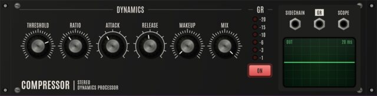
A stereo compressor with sidechain input, gain reduction meter and an oscilloscope of the output. Half width.
Half width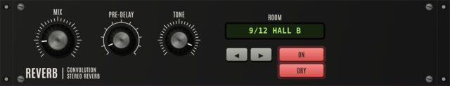
Convolution reverb with 12 rooms, from drum rooms to churches, with pre-delay and tone. Half width.
Half width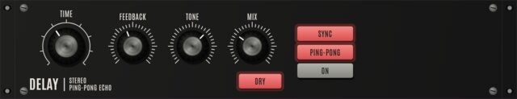
Stereo / ping-pong delay, free or synced to the tempo, with feedback tone. Half width.
Half width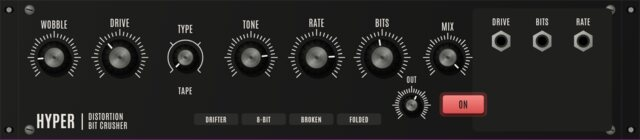
Lo-fi distortion and bit crusher: tape wobble, 4 saturations, sample rate and bit reduction. Half width.
Half width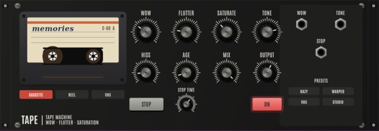
A tape machine for hazy, wobbly, nostalgic sound: wow and flutter, saturation, a darkening tone, hiss and dropouts, three machines and a tape stop. Half width.
Half width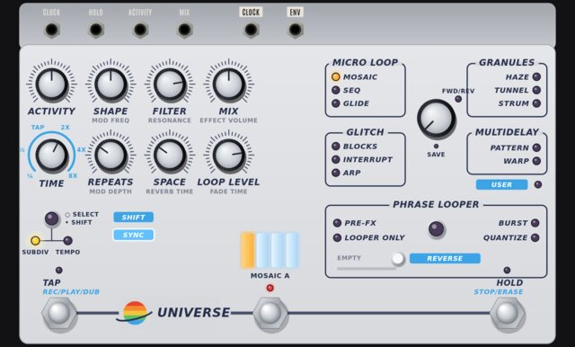
11 granular, looping, glitch and delay effects x 4 variations, a reverb and a phrase looper. Half width.
Half width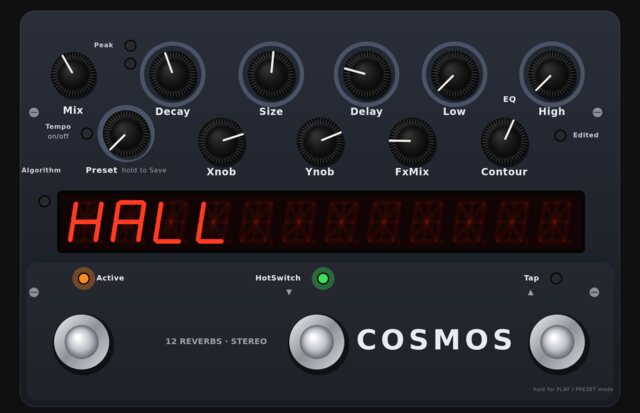
Hall, Room, Plate, Spring, DualVerb, Reverse, ModEchoVerb, Void, WarpVerb, TremoloVerb, DynaVerb, Shimmer; 10 knobs per algorithm, presets, freeze. Half width.
Half width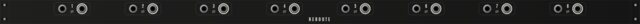
A thin row of 8 channel pairs: a front socket goes out on the back, a back socket comes out on the front. Cable one REROUTE's back to another's back to carry a signal across the rack without a long cable.
Click Audio on and press Space to play the patch. Help in the toolbar explains the rest.
Launch the app